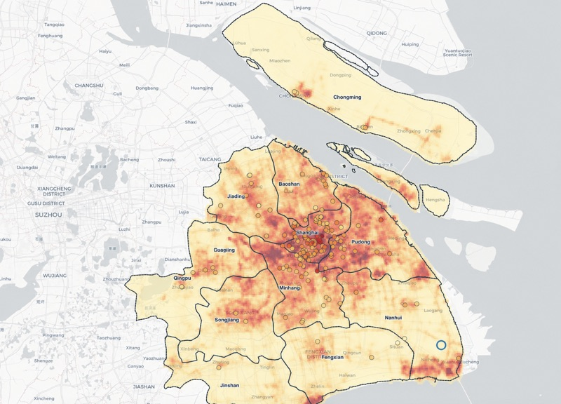
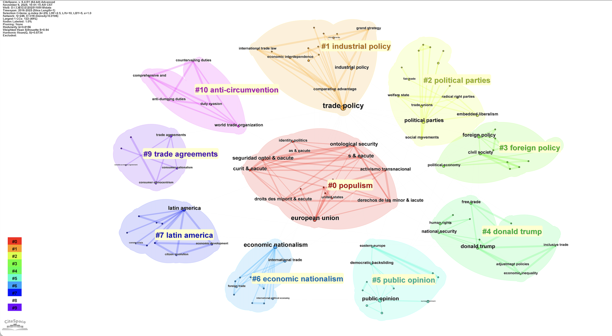
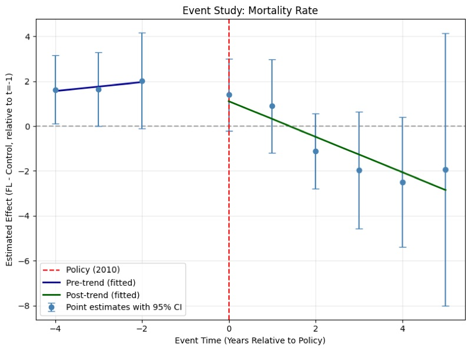

Duke University · Political Science
Yidan Xia
How are political identities expressed, maintained, and governed as narratives circulate through platformed information environments? I study how narrative frameworks shape collective self-understanding across intellectual history and platform data, and why awareness of those frameworks’ constructed nature does not dissolve their hold.
Education & Course
B.A. in Political Science & Public Administration
Built from the “Contemporary Western Political Science” course: a genealogy tracing how American political science moved from the state, constitutions, and formal institutions toward political process, behavior, systems, rational choice, historical sociology, new institutionalism, and political philosophy.
Built from the “Introduction to Political Anthropology” course: a two-trunk tree, whose left trunk traces how paradigms branch, react, inherit, and recombine; the right trunk is the long history, from power to the postcolonial, that they narrate.
M.A. in Political Science
Built from POLSCI 763S (Foundational Scholarship in International Relations): a genealogy tree that reorganizes a semester of foundational readings into paradigms (realism, liberalism, constructivism) with levels of analysis as a cross-cutting color axis.
Research Journey
Several projects, each approaching the same question from a different angle: how collective identity is formed, narrated, and transmitted. The angles vary, intellectual history, macro-behavioral observation, platform-level digital expression, and the narratives states tell about themselves. The path between them was not a straight line; sometimes a project raised a question it could not settle, sometimes a public event or a shift in the international landscape pulled my attention somewhere new.
Undergraduate thesis. How the Hua-Yi distinction and Western international law intertwined to construct the modern imagination of “Asia,” and why Asianism reproduced the very spatial-order logic it sought to transcend. A failed antithesis.
Data preparation, PSM, and control-group selection for a difference-in-differences evaluation of Florida’s 2010 opioid control policies.
Satellite nightlight as a proxy for student activity under China’s Double Reduction policy. Three identification strategies failed; a follow-up Shanghai GIS exercise confirmed the proxy itself cannot hold. The lesson: objective remote sensing cannot penetrate individual-level states.
How does nationalist identity turn into concrete economic policy, in trade, investment, or coercion? A two-dimensional map organizes a fragmented field, and surfaces several gaps where current scholarship runs thin.
Within a single discourse event (the “Mourning Ming” wave), which narrative directions face differential search-visibility friction? Feminist-lineage framing and Dream of the Red Chamber material are the most robustly associated with reduced visibility, not the directions one might expect.
Course proposal (POLSCI 719S). Can patriotic education achieve broad coverage of official nationhood premises without producing comparable integration of their logical dependencies? Developed from discourse analysis into a fieldable survey-experiment design.
M.A. thesis proposal. Do ordinary citizens rely on the same inferential chain the state uses when justifying territorial integrity? Or does the Qing-continuity premise the state treats as load-bearing turn out to be available but not relied upon?
Projects
“Evil” and “Benevolence” in Modern Japanese Asianism
How the Hua-Yi distinction and Western international law jointly constructed the modern imagination of “Asia,” and why Asianism’s moral vocabulary became a failed antithesis to Eurocentric universalism.

Did Double Reduction Really Reduce Burden?
Synthetic control analysis of nighttime light around schools in 10 pilot cities, followed by a Shanghai GIS exercise showing the proxy itself cannot detect student activity.

Economic Nationalism and the Transmission to State Behavior
How does nationalist identity turn into concrete economic policy, in trade, investment, or coercion? A two-dimensional map organizes a fragmented field, and surfaces several gaps where current scholarship runs thin.
Visibility Friction on Xiaohongshu
Within the 2025 “Mourning Ming” wave, feminist framing and Red Chamber material are the most robustly associated with reduced search visibility, not the directions conventional accounts would predict.
Coverage without Integration?
Survey design: Does patriotic education achieve broad coverage of official nationhood premises without producing comparable integration of their logical dependencies?
Mourning Ming and Narrative Resilience
Survey design: Do ordinary citizens rely on the state’s own inferential chain when justifying territorial integrity, or do they reach for entirely different reasons?

Florida’s 2010 Opioid Policies
A data-methods exercise: multi-source data integration, propensity score matching, and control-group selection for a DiD evaluation.